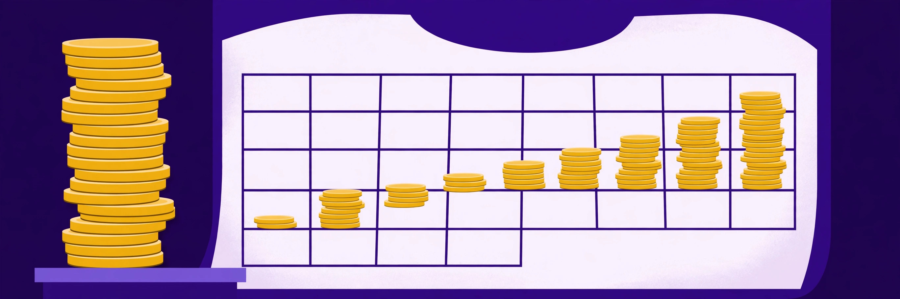

Recurring vs one-time AI affiliate commissions: which pays more over 12 months?

The headline rate is the worst way to compare affiliate programs. A 50% commission that pays once can be worth less than a 20% commission that pays twelve times — and a 30% “recurring” commission that stops after three months is a different animal from one that runs for the life of the customer. This guide separates the commission shapes hiding under the two labels, then runs one honest worked comparison: a single referred customer, twelve months, using only terms and plan prices published on official program pages and re-checked on 2026-10-13.
The commission shapes hiding under two labels
Across the programs in this directory, “recurring” and “one-time” break down into five distinct shapes:
- One-time flat bounty. Descript pays a one-time flat commission of $25 USD per new qualifying subscription sale, on the initial term only, with nothing for renewals. Semrush pays $100 to $300 per sale (tiered by volume), plus $10 per free trial — a much larger bounty, but still paid once.
- One-time percentage of the first cycle. InVideo AI pays 50% of the first monthly billing cycle, or 25% of the first annual cycle, and explicitly no commission on renewals. A big percentage of one payment is still one payment.
- Short recurring. HeyGen pays 35% on Creator and Team subscriptions for the first 3 months of each new subscription, then stops. The rate is generous; the runway is not.
- Capped recurring, usually 12 months. The directory’s most common shape: Frase pays 30% for 12 months, Writesonic 20% for up to 12 months, Jasper 25% for the first 12 months (rising to 30% for affiliates who generate and convert 100 leads in a rolling year), Synthesia 25% of net payments while the customer remains qualified for 12 months from first purchase, and Rytr 30% for 12 months.
- Open-ended recurring. Fliki pays 30% on each referred sale for the lifetime of the customer; Tidio pays 30% lifetime recurring; Pabbly pays 30% on recurring plans for as long as the referred customer stays (and a flat 20% on one-time or lifetime plans). No 12-month cliff — the risk transfers entirely to churn.
Every recurring variant shares one condition, stated in Jasper’s agreement and implicit everywhere: commission stops when the customer cancels. A 12-month recurring total is therefore a ceiling, not an expectation, and the worked example below treats it that way.
The worked comparison: one referral, 12 months
To keep the math checkable, the comparison uses plan prices printed on the programs’ own affiliate pages rather than prices gathered from review sites. Frase’s affiliate page states that plans start at $49/month. Writesonic’s affiliate page publishes a Basic plan figure of $199/month on annual billing and works its own illustration from it. Descript’s bounty needs no plan price at all, because it is flat.
| Program and model | Verified terms | Per month | 12-month total if the customer stays |
|---|---|---|---|
| Descript (one-time flat) | $25 once, initial term only | — | $25.00 |
| Frase (capped recurring) | 30% for 12 months; plan from $49/mo | $14.70 | $176.40 |
| Writesonic (capped recurring) | 20% for up to 12 months; Basic $199/mo (annual) | $39.80 | $477.60 |
| HeyGen (short recurring) | 35% for first 3 months only | 35% of plan price, months 1–3 | Stops after month 3 by design |
The arithmetic: Frase pays 30% of $49, which is $14.70 per month, and $14.70 × 12 = $176.40 across a full year from one referral on the entry plan. Writesonic pays 20% of $199, which is $39.80 per month, and $39.80 × 12 = $477.60 — matching the per-referral share of the illustration on Writesonic’s own page, which shows 10 Basic referrals producing $4,776 over 12 months and adds the honest caveat that it assumes full 12-month retention. Against Descript’s $25 one-time bounty, the entry-plan Frase referral is worth about seven times as much over a full year, and the Writesonic referral about nineteen times as much — provided the customers stay.
Provision is the operative word. Notice what the comparison also shows: the one-time model’s value does not depend on the plan at all. Descript pays $25 whether the customer chose a small plan or a large one, and Semrush’s $100–$300 bounty can exceed a year of small-plan recurring commissions from a cheaper tool. Model rankings flip with plan price, which is exactly why headline-rate comparisons mislead.
Break-even: the month recurring overtakes one-time
Break-even is where the honest comparison lives. Take the Frase referral at $14.70 per month against a $25 one-time bounty: after month 1 the recurring total is $14.70 (behind), after month 2 it is $29.40 (ahead). So the recurring model overtakes a $25 bounty during month 2 — but only if the customer is still subscribed in month 2. If that customer cancels after the first month, the one-time bounty wins, $25 to $14.70, and no later month can rescue the comparison because a cancelled recurring commission pays nothing further.
Run the same test against Semrush’s bounty range and the picture reverses at small plan sizes: at $14.70 per month, a Frase entry-plan referral needs 7 months to pass a $100 bounty and 21 months to pass a $300 bounty — longer than the program’s own 12-month commission cap, so at the top bounty tier the one-time payment wins outright on entry-plan referrals. Against Writesonic’s $39.80 per month, the $100 tier falls in month 3 and the $300 tier in month 8. The lesson is not that one model is better; it is that “recurring beats one-time” is only true for a specific combination of plan price, bounty size, commission cap, and retention — and all four are knowable before you write a word of content.
When one-time actually wins
Three situations favour the one-time shapes. High churn audiences: tools bought for a single project (a video for a launch, a writing tool for one book) cancel early, truncating recurring income while a bounty is already banked. Large flat bounties: Semrush’s per-sale range exists because the product’s value per customer is high; where a bounty approaches a year of recurring commission on the same plan, take the certainty. Annual-plan one-time percentages: InVideo AI’s 25% of a first annual cycle arrives as one lump covering a year of the customer’s payments, with no dependence on the customer renewing in year two. What one-time models never offer is compounding: ten referrals made in January pay nothing in June unless the model recurs, whereas open-ended programs like Fliki, Tidio, and Pabbly keep paying on old referrals for as long as those customers remain.
A decision framework for your catalogue
Before promoting any program, write down four numbers from its official page: the rate, the duration cap (3 months, 12 months, or lifetime), the plan price your audience will actually buy, and the break-even month against the best one-time alternative in the same niche. If the break-even month is later than your audience’s realistic retention, the recurring headline is decoration. Then weight the shapes: favour capped or open-ended recurring for tools your audience keeps open every week; favour bounties and first-cycle percentages for project tools and seasonal purchases; and treat short-recurring programs like HeyGen’s 3-month window as one-time income with a small tail, budgeting them accordingly.
Important: no income guarantees
Nothing in this guide is a promise of earnings. The 12-month totals are arithmetic illustrations that assume a referred customer stays subscribed for the full period; real customers cancel, downgrade, and refund, and every program listed can change its rates or terms. Figures were checked against official program pages on 2026-10-13 — verify the current terms on the official page before relying on them.
FAQ
Is recurring commission always better than one-time?
No. Recurring wins when the plan price is meaningful and the customer stays past the break-even month. A $300 one-time bounty beats a year of 30% commission on a $49 plan, because that recurring stream caps out at $176.40.
What does “lifetime” commission actually mean?
At Fliki, Tidio, and Pabbly it means commission continues for as long as the referred customer keeps paying — not for the affiliate’s lifetime, and not after cancellation. It removes the 12-month cap, not the churn risk.
Do annual plans change the comparison?
Yes. A percentage of an annual first cycle (InVideo AI pays 25%) arrives in one payment, while monthly-plan recurring commissions arrive in instalments and stop if the customer cancels mid-year.
Where do the prices in the worked example come from?
From the programs’ own affiliate pages: Frase states plans start at $49/month, and Writesonic publishes its Basic plan at $199/month on annual billing alongside its own 12-month illustration. Both were checked on 2026-10-13.